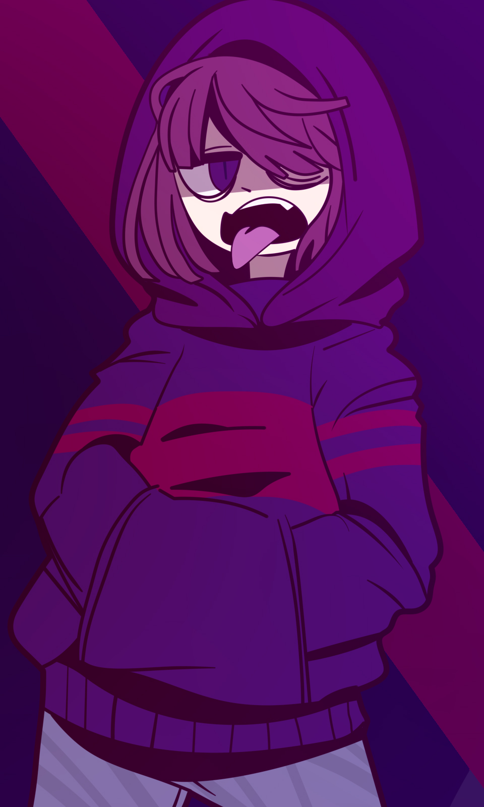

Черри Райдер
«Похуй на слова, похуй на мнение, похуй на людей. Они слишком жалкие и мелочные, чтоб слушать. »
Черри Райдер (англ. Cherry Rider) — альтернативная версия Глюка Райдера из жестокой вселенной SwapFell(SF). Являясь продуктом «глючной» АУ (G!AU), он представляет собой циничную и ожесточенную версию оригинала, адаптированную к жизни в мире, где правит диктатура и мафиозные кодексы. В отличие от своего пацифистичного двойника, Черри привык полагаться на силу и агрессию, хотя за маской грубости скрывается израненная личность, дорожащая близкими.
Содержание
История
Истоки и Новое Начало
Жизнь Черри началась в суровых реалиях SwapFell. После трагического самоубийства матери он и его младший брат Томми остались на улице. Выживание в мире мафии и диктатуры закалило его характер, превратив в циничного панка, не доверяющего никому, кроме брата. Все изменилось, когда в результате межпространственных искажений открылась G!AU. Черри встретил своего «оригинала» — Глюка Райдера. Несмотря на колоссальную разницу в характерах, Черри начал изучать новую для себя вселенную и постепенно вливаться в жизнь мира Эфериса. Так же где-то в этот момент начинает встречаться с Беллой и затем расстаётся.
Жизнь в Эферисе и Семья Вампиров
Обосновавшись в новом мире, Черри познакомился с МС, который стал одним из немногих, чьё присутствие Черри хотя бы терпел. В этот же период он встретил вампиршу Рози. Её семья проявила к необычному пришельцу из SwapFell интерес, а сама Рози стала часто наведываться к Черри. Эти отношения были странными и натянутыми, так как Черри не привык к искреннему вниманию и часто отвечал на него грубостью, скрывая внутреннюю неуверенность.
Эпоха Концертов и Разрыв
Музыкальная карьера Черри была построена на агрессии и честности. В попытке помочь Кэйсси, он начал активную кампанию против Алисы, используя свой острый язык, чтобы выжить её со сцены. Пиком этого периода стал его сольный концерт. Черри исполнил песни, тексты которых были настолько жестокими и личными, что буквально раздавили самооценку присутствовавшей там Рози. Не дожидаясь финала и не заботясь о последствиях, Черри просто ушел со сцены, окончательно разорвав связи с семьей вампиров.
Архипелаг ОКО и Встреча с Дженнифер
Спокойная жизнь закончилась, когда Черри против своей воли оказался втянут в интриги организации ОКО. Его затащили на цифровой Архипелаг, где в это же время находилась Дженнифер Райс. Там Черри в полной мере проявил свой жестокий нрав: в ходе одного из заданий ему пришлось сломать Дженнифер руку. Несмотря на этот инцидент, именно благодаря его решительности и помощи Глюка группе удалось совершить побег из этого кошмара.
Запретная Любовь и Конфликт с Райсами
После побега МС попросил Черри присмотреть за Дженнифер. Исполняя просьбу в своем стиле, Черри случайно напоил девушку, не зная о её слабой переносимости алкоголя. Дженнифер начала проявлять к нему знаки внимания, которые Черри поначалу игнорировал. Однако после квартирника у Гвен, где они узнали друг друга поближе, Черри осознал глубину чувств Дженнифер и начал влюбляться в ответ. Это вызвало ярость у Чанзи, которая категорически не одобряла их союз. Конфликт достиг апогея, когда мать Дженнифер ворвалась в дом Черри во время их интимного момента и напала на него. В результате Дженнифер отреклась от семьи и переехала жить к Черри в Сноудин.
Падение Ада и Настоящее Время
Во время событий арки «Падение Ада» Дженнифер начала страдать от припадков, вызванных влиянием Оливии, и на двое суток пропала в Преисподней. Черри, охваченный тревогой, вместе со Стеллой отправился в Ад на поиски. Там он попал под магическое влияние Агаты, которая управляла демонами, но был спасен после того, как Оливия уничтожила узурпаторшу. После пережитого кошмара Черри и Дженнифер смогли прийти к хрупкому миру с Чанзи. На данный момент Черри продолжает жить с Дженнифер, стараясь быть для неё опорой в мире, который всё еще пытается их разделить.
Личность и характер
Черри - полная противоположность Глюка в плане социального взаимодействия. Он груб, нагл и крайне остр на язык. Его мировоззрение сформировалось на улицах Сноудина и Водопадья, где выживание зависело от способности противостоять системе или стать её частью.
- Мизантропия: Он открыто презирает большинство окружающих, считая их слабыми и недостойными внимания.
- Скрытая доброта: Можно отметить, что за внешней агрессией Черри скрывается доброе сердце, которого он сам словно боится. Это особенно проявляется в его отношении к младшему брату Томми и Дженнифер.
- Преданность: Хоть и кажется, что Черри последнее существо, которое будет рядом, но он предан с своими друзьями и готов помочь
- Честность: Как и его оригинал, он органически не переваривает ложь, хотя выражает это через прямолинейные оскорбления, а не через мягкую искренность. Уж лучше сказать правду в лицо, чем
Внешность
Образ Черри пропитан эстетикой панк-рока и визуальным стилем его родной вселенной. Главной особенностью его стиля являются фиолетовые круглые очки, что выделяют его присутствие, а так же преобладание фиолетовых оттенков, что служит символом его неразрывной связи с миром SwapFell.
Он выглядит как молодой человек среднего роста с густой, вечно растрепанной копной темно-фиолетовых волос. В отличие от Глюка, его облик более резкий и вызывающий.
- Лицо и аксессуары: Черри практически не расстается со своими круглыми очками (часто с синими или фиолетовыми линзами). Одной из приметных деталей является серебряный пирсинг.
- Гардероб: Его стандартный наряд включает в себя темную кожаную куртку, надетую поверх фиолетовой футболки или лонгслива. Часто носит полосатые фиолетово-черные нарукавники, что подчеркивает его бунтарский образ. На ногах — массивные темные берцы с яркой шнуровкой.
- Особенность глаз: Хотя глаза часто скрыты очками, в моменты сильного раздражения или азарта его радужка вспыхивает ярко-розовым или малиновым цветом.
- Телосложение: В отличии от Глюка, Черри обладает довольно спортивным телосложением и не столь худой, как оригинальный Глюк.
Способности и Арсенал
Магия Черри значительно отличается от способностей его оригинала. Она менее разнообразна в разрушительной силе, но гораздо более мучительна для противника, так как сосредоточена на концепции подавления и боли.
- Нити Фантомной Боли: Ключевая особенность его магии. Прочные нити исходят напрямую из его души. Они способны не только намертво обматывать цель, но и вызывать при контакте острую фантомную боль. Это делает Черри мастером контроля дистанции и допроса.
- Специфические ГлБ (Глюк-бластеры): Черри не обладает мощью Глюк-бластеров оригинала. Он способен призывать только слабые версии бластеров или их модификации, стреляющие магическими нитями вместо лучей.
- Магические Ножи: Черри может призывать обычные магические ножи для быстрых атак или метания.
- Глюкопортация: Способность к мгновенному перемещению (ТП). Как и у Глюка, процесс сопровождается визуальными помехами и искажениями пространства.
- Бита: В отличие от многих магов, Черри часто полагается на грубую физическую силу, используя в бою обычную биту.
Связи с персонажами
Семья и паралельные версии
- Томми: «Мой младший брат. Глупенький, зато какой милый»
- Глюк Райдер: «Мой братан, хоть немного и припизднутый, но всё же хороший друг»
- Генри: «Старший из нас, такой статный. но зато каков, хех)»
- Кэйсси: «И куда эта плакса пропала? Пытался помочь, в итоге у него его девушка залетела, вот и думайте теперь сами»
- Френк: «Странный. немного пугает, но зато с ним приятно в группе»
- Селина Райдер: «Дочка Кэйсси....бывает, мдэ»
- Гвен: «Уууу, припизднутая подруга. Стрёмная, странная, зато родная, мой брат, хоть и без хуя»
- Том Райдер: «Брат Глюка, стрёмный как смерть...но вроде норм челик»
- Анна Райдер: «Вот и сгнила шлюха, какая жалость, прощай»
Друзья
- Дженнифер Райс: «Любимая принцесса моя, хотя и глупышка та ещё. Но всё же...люблю тебя, наверное это так?»
- Коул Райс: «Немного своенравный, словно олень упрямый. Но, зато не в контрах были»
- Стелла: «Ну чего ты, трахарька котят?) Да ладно тебе, у всех свои наклонности, да и даже так принял тебя в дом, не злись по этому)»
- Айр(SF!Роб): «Мой лучшей кент, адвокат весёлый, хоть немного и серьёзный. »
- Реджина(SF): «Королева мафии, так и защищала меня и брата и...спасибо за всё, что ты делала для Томми, хоть я и в лицо не скажу тебе. но ценю это»
- Стив (SF): «Немного стрёмный, но тоже с ним в друзьях ведь) »
- Беллатрисса: «Блять, ну сука ты конечно редкостная, прям едкая заноза. Но не смотря на это, стиль и шарм не потеряла ты) »
Нейтралы
- Джеррими Райс: «Он...странный. Вроде бы не могу назвать прям фриком или серъёзным, но что-то всё же не так»
- Чанзи Райс: «Не, взлом в мой дом тебе не прощу до сих пор...и всё же ты помогла Дженнифер...и вроде как Дженнифер не против...но всё же, Женщина, что блять с тобой не так?!»
- МС: «Блять, ну ещё один любитель идеальной морали. Не умерла же Дженнифер из-за стаканчика с алкоголем...да и сам просил ведь присмотреть. »
- Рози: «Ой, ну поплакала и фиг с тобой. С детьми всё ровно не очень круто как-то тусоваться...так и ещё с глупенькими мышками, что не понимают моей доброты) »
Враги
- Агата: «Сдохни, сучка. А то начала тут "Я королева, отлижите все, я королёва", просто пошла нахуй»
- Энджи Доу: «Блять, до сих пор тебе не доверяю и до сих пор скрипя зубами вижу тебя в своём доме»
- Джон Доу: «К тебе это так же относиться, шкет»
- Азриэль Дримур: «Нихуя, какой важный, хуй козлячий. А слабо свою внучку не травить разными наркотой и не быть куском дерьма?»
- СГС (Альфред): «Ты жалок и слаб, а ещё так много воды о тебе было. Попиздишь мне тут ещё, косточка) »
Интересные факты
- Постоянная боль: Душа Черри постоянно источает боль и находится в состоянии глубокого истощения. Из-за этого он абсолютно не чувствует никакой другой физической боли извне — его собственный внутренний фон заглушает любые ранения в бою.
- Магия души: Хоть душа Черри и испытывает постоянную боль, она усиливает его магию. Благодаря душе, он может контролировать боль других существ, если дотронется нитями до них
- Враждённая Честность: Никогда не врёт, вот НИКОГДА. Он вряд ли умеет врать, говорит только правду.
- Вредное влияние: Под влиянием Черри его возлюбленная Дженнифер начала курить. Сам Черри часто использует алкоголь, чтобы попытаться хотя бы на время приглушить вечную боль в своей душе.
- Голос: Голос Черри списан с голоса Ивана Марголдина из группы Полматери(ПЛМ) и AsperX. Так же, голос автора так же похож на голос AsperX
- Создание: Черри был создан под влиянием Панк-Музыки и всего движения Панка
- Гитара: у Черри несколько гитар, но главные: Гибсон и Корт
- Связь с Автором: Автор всей истории "Черрешня" или же "Микрофон Черрешни" назвался сам Черри, ибо хотел быть похожим на него. Не смотря на это, Автор имеет сильные отличия, что очень важно.
- Бабочка: Черри ненавидит классический костюм и галстук-бабочки
- Первая тема: Черри первый персонаж с собственной официальной темой созданной от Автора
- Связь с ЗК: Дизайн Черри был вдохновлён дизайном Вару из Земли Королей/13 карт за авторством Фёдора Комикса
Галерея

_polarr.jpg)
